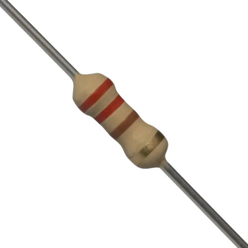
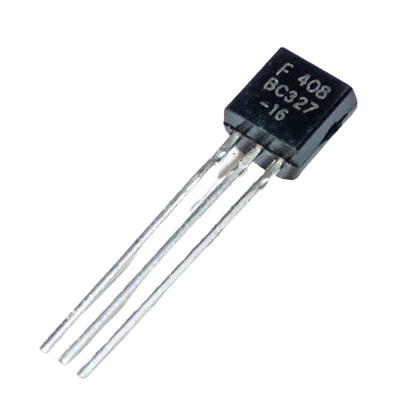
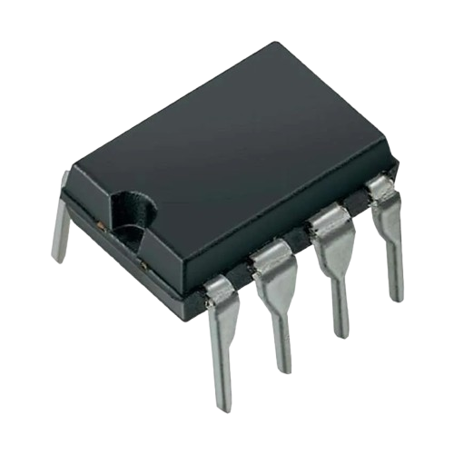
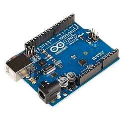
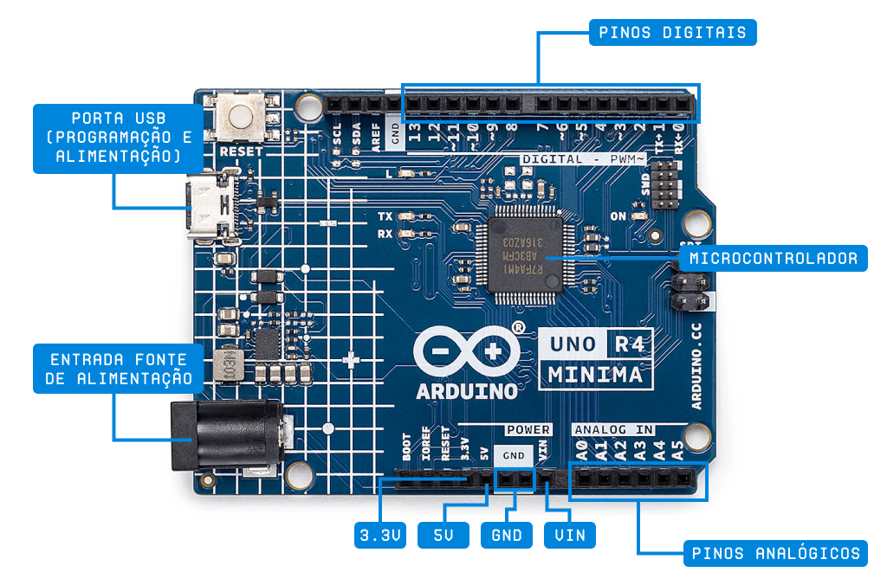

Fundamentos Eletrônica
Resistor:
O resistor é como um porteiro da corrente elétrica. Ele não deixa “todo mundo entrar de uma vez”, controlando o fluxo de elétrons dentro do circuito. Sem ele, muitos componentes queimariam por receber energia demais. É usado para limitar corrente, dividir tensão, proteger LEDs, transistores e praticamente qualquer peça eletrônica.
Diodo LED:
O LED é aquele componente que transforma energia elétrica em luz. Ele funciona como uma válvula elétrica, deixando a corrente passar só em um sentido. Além de iluminar, serve muito para indicar funcionamento: quando o LED acende, sabemos que algo está ligado, carregando ou recebendo energia. Por ser eficiente, gasta pouquíssima corrente e dura muito tempo.

Transistor:
O transistor é o coração da eletrônica moderna. Ele funciona como um interruptor controlado por sinal ou como um amplificador. Com um sinal pequeno você pode controlar algo bem maior é como usar um dedo para acionar uma máquina inteira. É graças aos transistores que temos computadores, áudio amplificado, controles, sensores e muito mais.
Circuito Integrado:
O CI é como uma cidade inteira de componentes minúsculos dentro de um bloquinho preto com pinos. Lá dentro existem resistores, transistores, capacitores e outros elementos formando um sistema completo. Eles podem fazer coisas simples, como gerar pulso (555), ou complexas, como funcionar como processadores. Usamos CIs para reduzir tamanho, melhorar desempenho e criar funções que seriam impossíveis com peças individuais.
Sensor de Temperatura:
O sensor de temperatura é como um termômetro inteligente que fica de olho no ambiente o tempo todo. Ele avisa a máquina quando está ficando quente demais ou frio demais. É muito usado em ar-condicionados, geladeiras, sistemas industriais e até em placas eletrônicas para evitar superaquecimento. Sem ele, muitos equipamentos trabalhariam às cegas, sem saber se precisam esfriar ou aquecer.
Sensor de Umidade:
O sensor de umidade funciona como um “nariz eletrônico” que sente quanta água existe no ar ou no solo. Quando o nível sobe ou desce demais, ele informa o sistema para tomar uma ação, como ligar um desumidificador, ativar irrigação ou regular ambientes. É essencial em estufas, meteorologia, agricultura e espaços climatizados. É como se ele dissesse: “Ei, está seco demais!” ou “Opa, tem água demais no ar!”.
Sensor de Luminosidade:
O sensor de luminosidade é como um olho eletrônico. Ele detecta a quantidade de luz no ambiente e ajuda sistemas a reagirem automaticamente. Por exemplo: quando escurece, ele pode acender lâmpadas; quando o sol está forte, pode ajustar a intensidade de uma tela ou acionar persianas automáticas. Esse sensor dá à máquina a capacidade de “enxergar” o mundo ao redor.
O que é Arduino:
O Arduino é uma placa eletrônica inteligente, criada para facilitar a vida de quem quer aprender ou criar projetos de automação e eletrônica. Ele funciona como um pequeno cérebro programável, capaz de receber informações de sensores e controlar LEDs, motores, relés e muito mais. A ideia por trás do Arduino é tornar a tecnologia acessível para todos — estudantes, hobbyistas e até profissionais.
Para que serve?
O Arduino serve para interpretar dados do ambiente e agir sobre eles. Ele é muito usado em projetos escolares, como maquetes automatizadas e robôs simples, além de aplicações de automação residencial, como acender luzes automaticamente, medir temperatura ou acionar portões. Também aparece em projetos de robótica, na Internet das Coisas, em alarmes inteligentes e na prototipagem rápida, onde ideias são testadas antes de virar um produto final. É como uma ferramenta que transforma imaginação em tecnologia.
Vantagens do Arduino✅
Uma das maiores vantagens do Arduino é a facilidade de uso, ideal para quem está começando. Ele possui uma enorme comunidade que compartilha códigos, tutoriais e exemplos, facilitando ainda mais o aprendizado. Além disso, funciona com diversos sensores e módulos baratos, e o software de programação é gratuito. Isso o torna perfeito para testar ideias rapidamente e criar projetos do zero sem complicação.
Desvantagens do Arduino ⚠️
Mesmo sendo excelente, o Arduino tem suas limitações. Ele não possui um poder de processamento muito alto, o que impede seu uso em projetos extremamente complexos. Sua memória é pequena, e isso pode restringir sistemas maiores ou mais detalhados. Além disso, nem sempre é a melhor opção para produtos finais profissionais, a menos que sejam feitas adaptações específicas. Em resumo, é ótimo para aprender e criar protótipos, mas não foi feito para tarefas muito pesadas.
Como o Arduino Funciona?
O Arduino funciona como um pequeno cérebro eletrônico capaz de perceber o ambiente e agir sobre ele. Ele lê informações vindas de sensores — como temperatura, luz, distância ou umidade — e, com base nisso, toma decisões que você programou. Essas decisões podem ser acender um LED, mover um motor, enviar dados, tocar um alarme ou controlar algum equipamento.
Por dentro, o Arduino possui um microcontrolador, que é o responsável por executar o programa que você escreve no computador. Depois de conectado pela porta USB, você envia o código para ele, e a placa passa a funcionar sozinha, mesmo sem estar ligada ao PC.
Ele faz isso recebendo sinais pelas entradas e enviando comandos pelas saídas, tornando possível criar sistemas automáticos de forma simples e acessível.
O que é eletrônica embarcada?
Eletrônica embarcada é o nome dado à tecnologia que coloca circuitos eletrônicos e programação dentro de máquinas, aparelhos e dispositivos para que eles funcionem de forma automática e inteligente. É como esconder um “mini cérebro eletrônico” dentro de objetos do dia a dia.
Ela está presente em praticamente tudo ao nosso redor: celulares, carros, micro-ondas, relógios digitais, elevadores, drones, TVs e até brinquedos. A ideia é que a eletrônica embarcada permita que os equipamentos tomem decisões, monitorem o ambiente e executem tarefas sem que o usuário precise fazer tudo manualmente.
Podemos dizer que a eletrônica embarcada é o que transforma um objeto comum em algo inteligente — e o Arduino é uma das portas de entrada mais fáceis para aprender esse universo.
Qual linguagem de Programação é usada pelo Arduino?
O C/C++ é como se fosse o idioma que o Arduino mais domina. Quando você programa nessa linguagem, a comunicação flui com perfeição: cada comando é rápido, direto e eficiente. É uma linguagem poderosa — um pouco rígida no começo — mas que te permite explorar cada detalhe da eletrônica, como se estivesse pilotando o Arduino sem limitações.

Python
Programar o Arduino em Python é como conversar com ele de forma mais leve e natural. O código fica limpo, curto e agradável de entender. É ideal para quem está começando ou quer experimentar ideias rapidamente. Ele não tem a mesma velocidade bruta do C/C++, mas entrega praticidade e uma experiência bem moderna.
Entradas Digitais no Arduino
As entradas digitais são como os “ouvidos” do Arduino. Elas servem para que a placa perceba o mundo ao redor por meio de sinais simples: ligado ou desligado, 0 ou 1, baixa tensão ou alta tensão.
Quando você conecta um botão, um sensor de presença, um fim de curso ou qualquer dispositivo que só precisa dizer “sim” ou “não”, é uma entrada digital quem recebe essa informação.
Saídas Digitais no Arduino
As saídas digitais são o oposto: em vez de ouvir, o Arduino “fala”.
Elas enviam sinais digitais para controlar componentes externos, como LEDs, relés, motores, buzzers e módulos eletrônicos. Esse sinal também é sempre 0 ou 1 — desligado ou ligado.